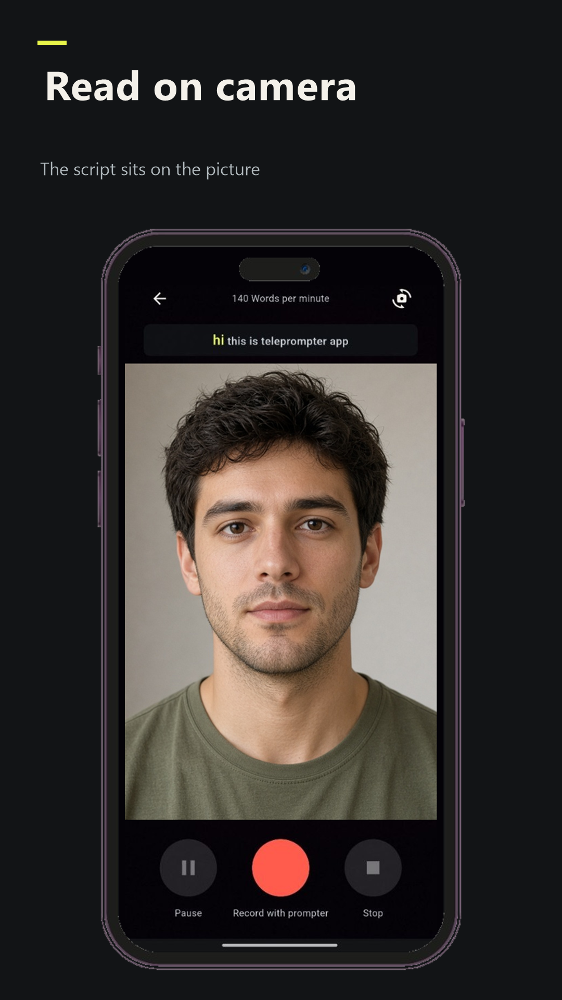
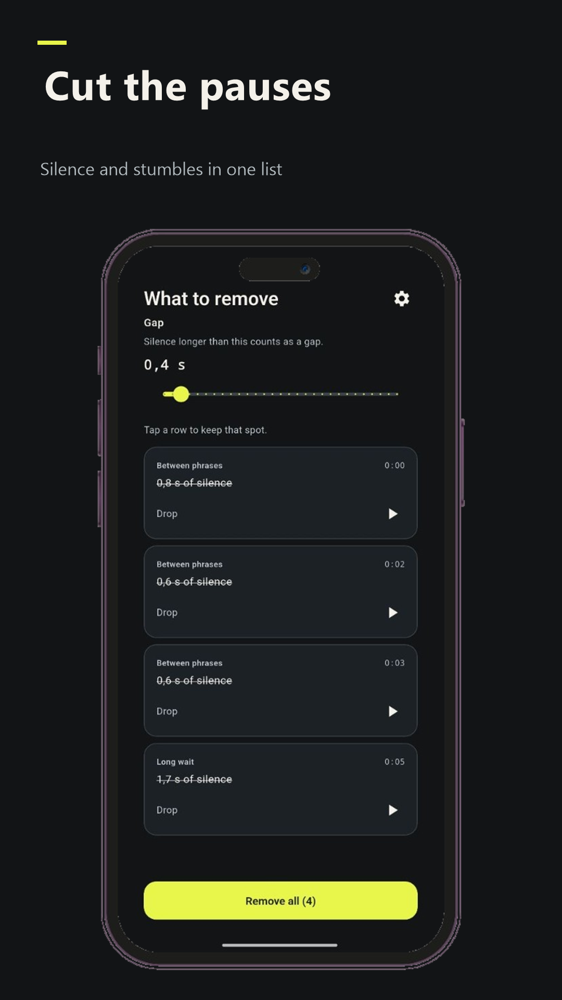

Teleprompter for people on camera
The script moves while the camera runs. Pause stops the camera and the script together. Speed is 60 to 300 words a minute.
The file stays on the phone.
The script on the picture
Record in the app, or insert a clip from the gallery. The words sit on the picture while you talk.

Rows you can keep
Silence, a repeated phrase, and hesitation sounds are listed. Keep any row. The cut is made once, when you save.

Speed and the free script
60
words a minute, slowest
300
words a minute, fastest
400
characters, then the free script stops
Questions
The limits are the ones in the app. Speed and the free script
Does the video leave the phone?
No. The file stays on the phone.
Where do the subtitles come from?
From the words that remain after the cut. You can edit the lines on the phone, and set their position and look.
What does the free version stop?
The free script stops at 400 characters. It has a watermark, ads, and no burned-in subtitles. Premium removes those limits.
Can I use a clip I already filmed?
Yes. Record in the app, or insert a clip from the gallery.
Will this edit a long film?
No. Praelo cuts the listed rows once, when you save. It does not replace an editor for a long film.